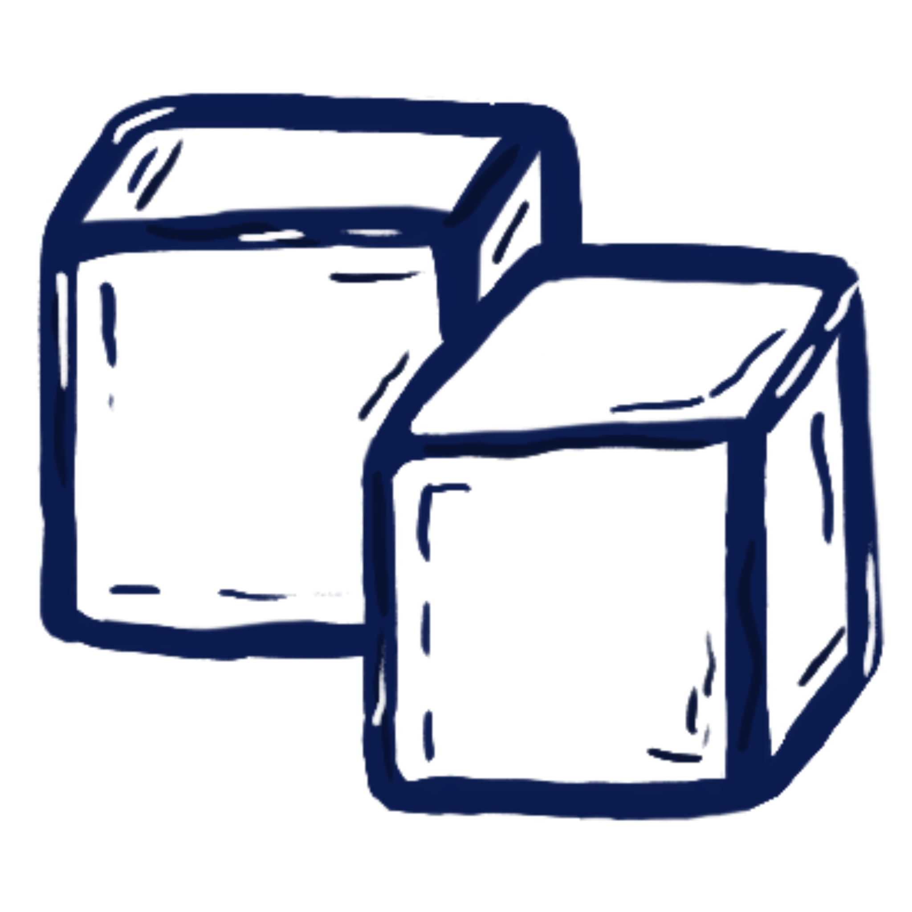

-- °C
Temperaturen zwischen 25°C und 30°C werden als angenehm zum Schwimmen empfunden.
Stand der Messung: Lädt...
Lädt...
Lädt...
Lädt...
Temperaturen zwischen 25°C und 30°C werden als angenehm zum Schwimmen empfunden.
Wassertemperaturen zwischen 20°C und 23°C werden als angenehm zum Schwimmen empfunden.
Aufgrund der hohen Strömung sind Abflussmengen über 270m³/s gefährlich.
Finde heraus, ob die Temperaturen geeignet für dich sind

Die Temperaturen sind heute perfekt für dich zum Schwimmen geeignet.
Die Temperaturen sind heute perfekt für dich zum Schwimmen geeignet.
Das Wasser ist heute etwas kalt für dich.